1. Edge öffnen1. Open Edge
Klicke auf das Symbol von Microsoft Edge in der Taskleiste.Click the Microsoft Edge icon on the taskbar.
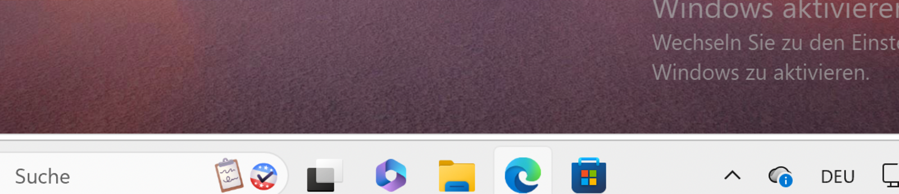
pnorthup.me/grg23/general
Mit dem Microsoft-Schulkonto anmelden und synchronisierenSign in and sync with your Microsoft school account
Klicke auf das Symbol von Microsoft Edge in der Taskleiste.Click the Microsoft Edge icon on the taskbar.

Klicke auf das Profilbild und auf Zum Synchronisieren von Daten anmelden. Wenn dort ein fremdes Konto steht, melde dich bei der Lehrkraft.Click the profile icon, then Zum Synchronisieren von Daten anmelden (“Sign in to sync data”). If someone else’s account is shown, ask your teacher.
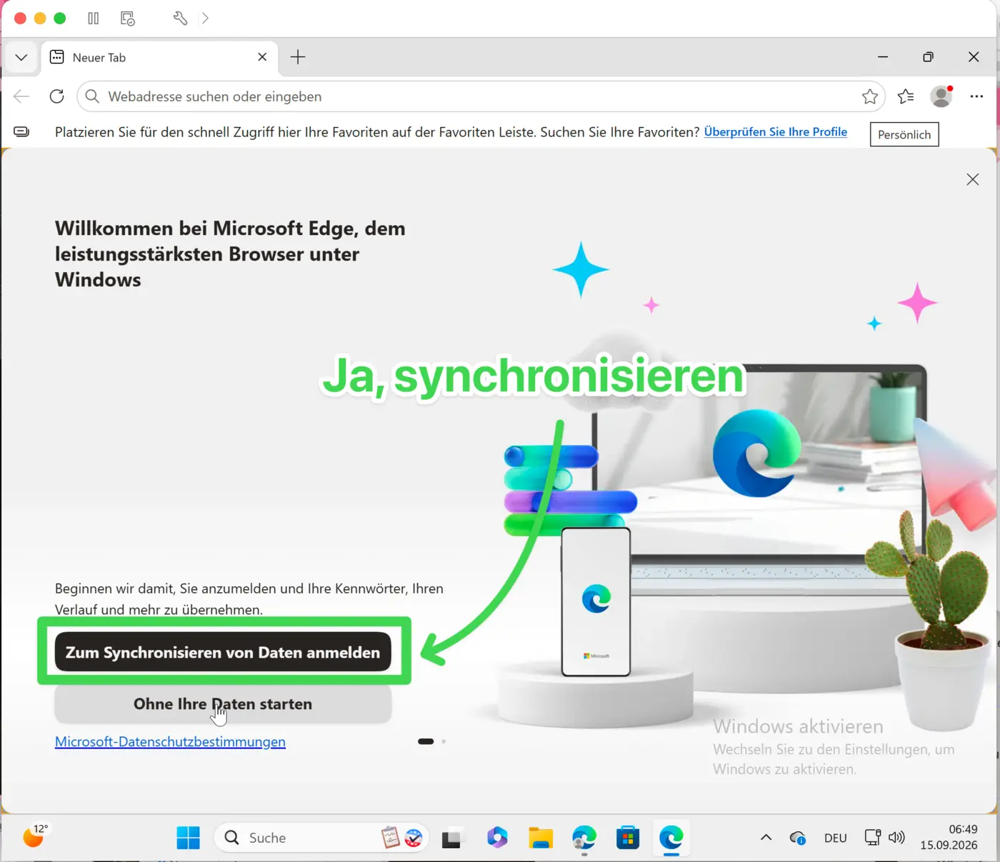
Gib vorname.nachname@grg23vbs.ac.at ein. Klicke auf Weiter.Enter firstname.lastname@grg23vbs.ac.at. Click Weiter (“Next”).
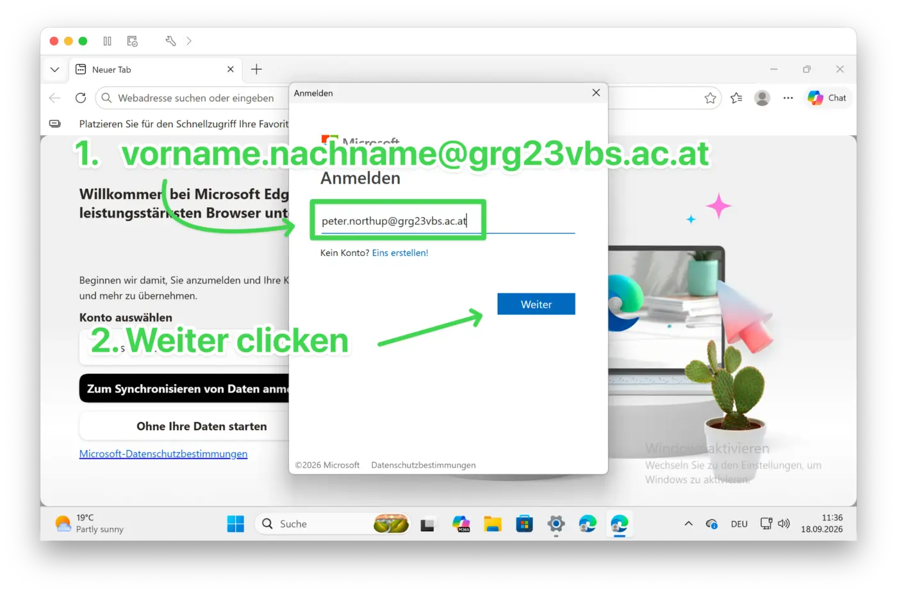
Gib dasselbe Passwort wie bei der Windows-Anmeldung ein. Klicke auf Anmelden.Enter the same password you used to sign in to Windows. Click Anmelden (“Sign in”).
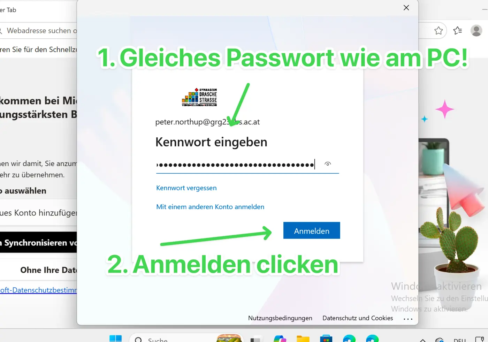
Klicke bei Lassen Sie uns Ihr Konto schützen auf Weiter. Klicke auf dem nächsten Bildschirm auf den kleinen Link Setup überspringen, wenn er angeboten wird. Das kann zweimal erscheinen. Wenn es keinen Link zum Überspringen gibt, frage die Lehrkraft.If Lassen Sie uns Ihr Konto schützen (“Let’s protect your account”) appears, click Weiter (“Next”). On the next screen, click the small Setup überspringen (“Skip setup”) link if it is available. This may appear twice. If there is no skip link, ask your teacher.
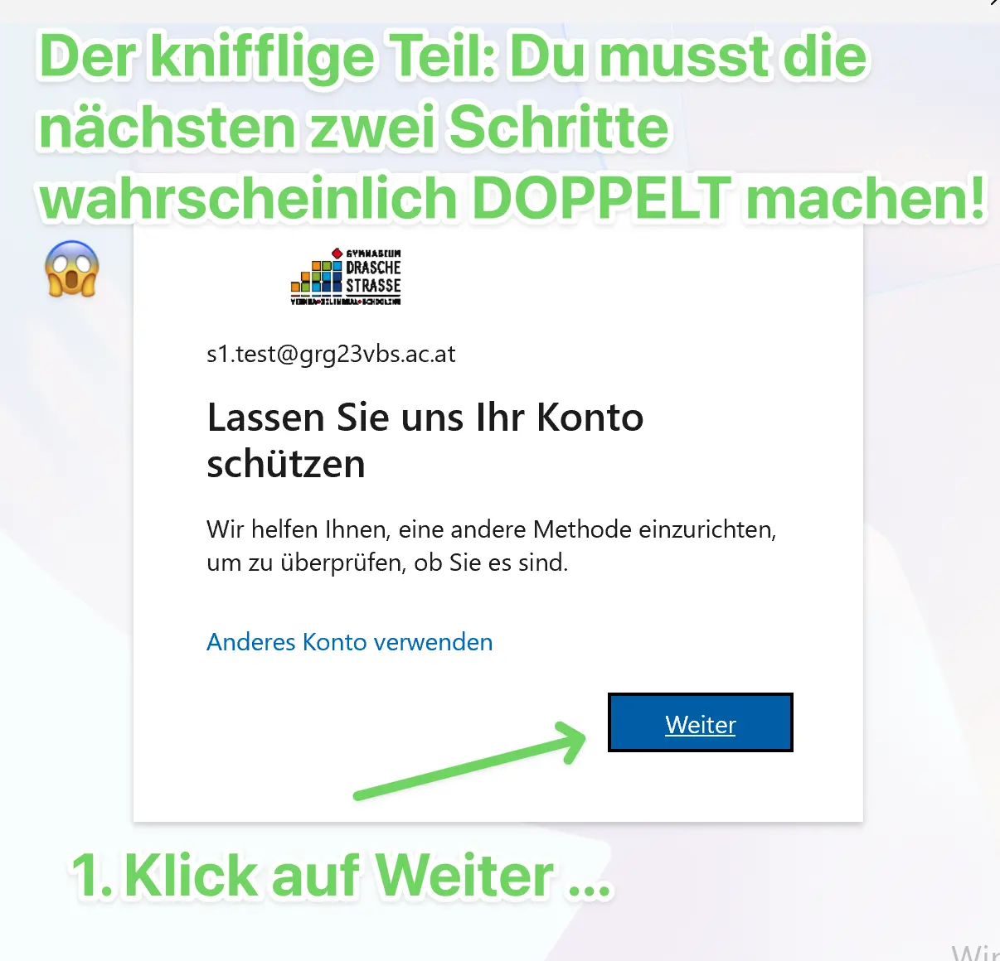
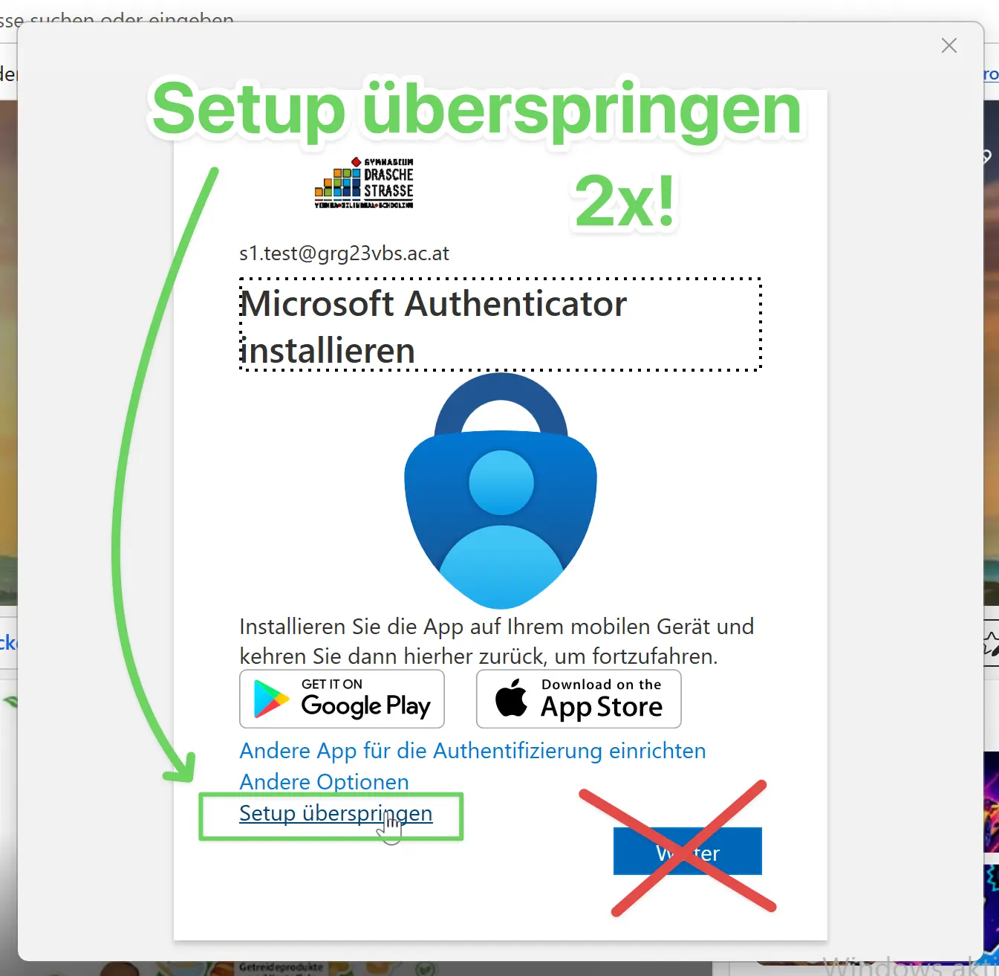
Wenn Bei allen Apps und Websites auf diesem Gerät anmelden? erscheint, klicke auf Ja.If Sign in to all apps and websites on this device? appears, click Ja (“Yes”).
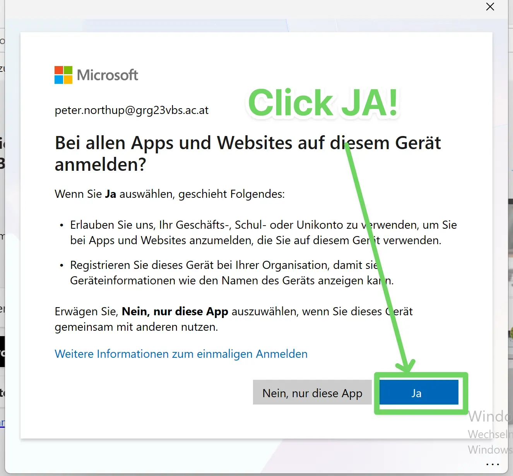
Wenn gefragt wird, ob deine Organisation das Gerät verwalten darf, klicke auf Nein. Das ist die Auswahl aus unserer Schul-Anleitung.If asked whether your organisation may manage the device, click Nein (“No”). This is the choice used in our school guide.
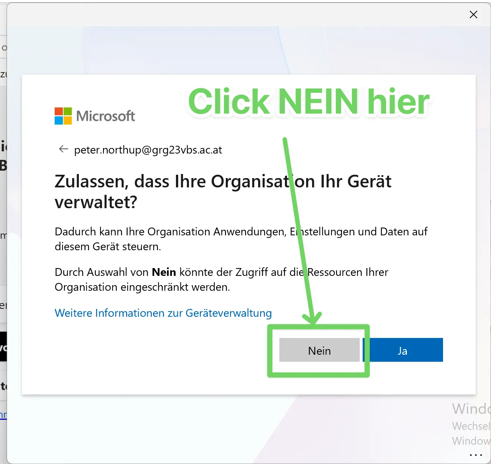
Klicke gegebenenfalls auf Bestätigen und fortfahren. Wenn die Auswahl für zusätzliche Datennutzung erscheint, wähle Alle ablehnen.Click Bestätigen und fortfahren (“Confirm and continue”) if it appears. If asked about additional data use, choose Alle ablehnen (“Reject all”).
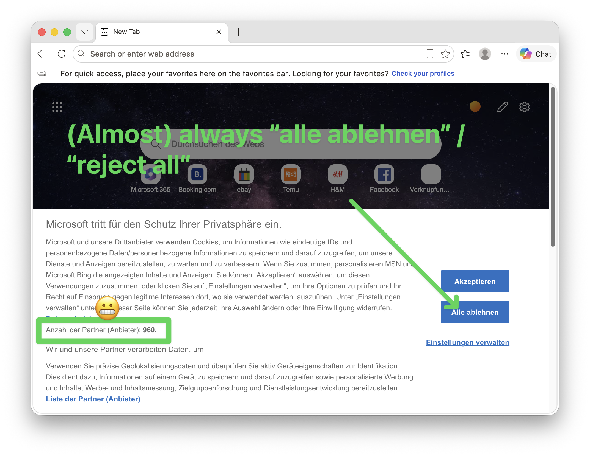
Klicke bei der Gestaltung auf Weiter, bis die Einrichtung fertig ist. Lehne optionale Datennutzung ab: Nicht zulassen / Don’t allow oder entferne das Häkchen.Click Weiter (“Next”) through the appearance settings until setup is finished. Reject optional data use: choose Nicht zulassen / Don’t allow or remove the tick.
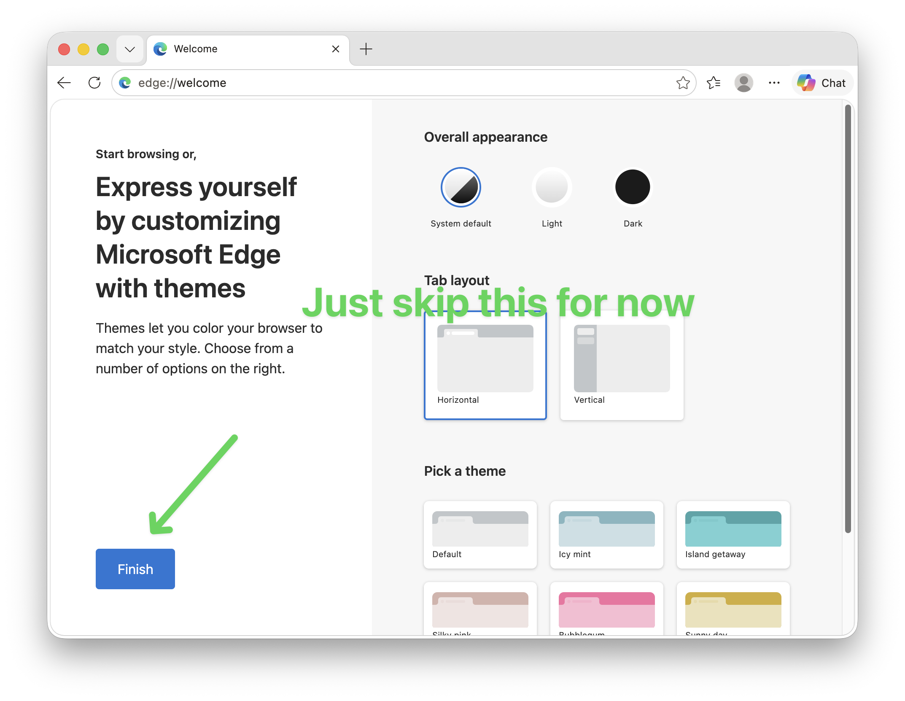
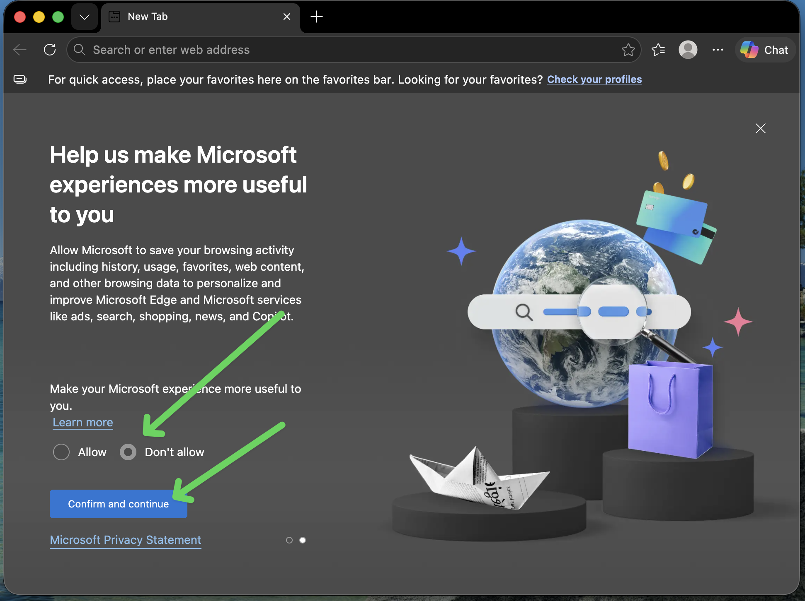
Klicke auf das Profilbild. Steht dort deine Schul-E-Mail-Adresse? Ist die Synchronisierung eingeschaltet? Wenn nicht, melde dich bei der Lehrkraft.Click the profile icon. Does it show your school email address? Is syncing turned on? If not, ask your teacher.
Klicke in die Adressleiste. Gib teams.cloud.microsoft ein und drücke Enter. Du kannst auch hier Teams öffnen.Click the address bar. Enter teams.cloud.microsoft and press Enter. You can also open Teams here.
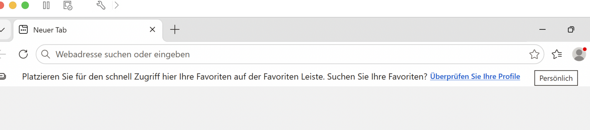
Falls nötig, melde dich mit deiner Schul-E-Mail-Adresse und deinem Windows-Passwort an. Prüfe am Profilbild, dass dein eigenes Schulkonto angemeldet ist.If needed, sign in with your school email address and your Windows password. Check the profile icon to make sure you are signed in with your own school account.